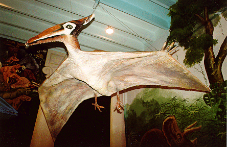
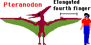
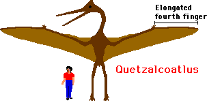
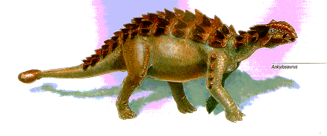
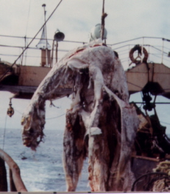

| Feature Article - October 1998 |
| by Do-While Jones |
I don't believe in unicorns. But I would change my mind if someone came up with some solid evidence that they once existed. Wouldn't you?
What kind of evidence would it take to make me change my mind? Well, if someone found a reasonably complete skeleton of a horse-like animal with one long, twisted, horn coming out of its forehead, that would be convincing evidence. It would be even more compelling if they found those fossils in Ireland, the legendary home of the unicorn.
I'm not naïve. I would be more skeptical about such evidence than evolutionists have shown themselves to be in the past. For example, evolutionists accepted the Piltdown Man fraud for 40 years before someone looked at the teeth closely enough to see that someone had shaped them with a file. Evolutionists wanted to believe they had found the missing link so badly that they weren't skeptical enough of the human skull and ape jaw that someone planted in the Piltdown quarry as a hoax. If someone claimed to find a fossil unicorn, I'd demand some sort of proof that the skeleton was authentic before I started believing in unicorns.
If someone found a pig's tooth, and claimed it came from Nebraska Unicorn, that definitely would not be sufficient evidence to make me start believing in unicorns. I need more evidence than a single tooth. I guess that makes me more skeptical than the evolutionists who accepted a pig's tooth as evidence of Nebraska Man. Everyone knows the only genuine artifacts associated with Nebraska Man are pig skins.
But if several reputable scientists found fossil unicorn bones, I would believe that unicorns really did exist at one time. Furthermore, I would believe they existed recently enough that people saw them, and started some legends about them. But nobody has ever found any fossil unicorn bones, so I don't believe they existed.

There is a Native American legend that says a thunderbird saved a tribe from starvation by bringing it a whale to eat.
|
A deep whirring sound, like giant wings beating, came from the place of the setting sun. All of the people turned to gaze toward the sky above the ocean as a huge, bird-shaped creature flew toward them.
This bird was larger than any they had ever seen. Its wings, from tip to tip, were twice as long as a war canoe. It had a huge, curving beak, and its eyes glowed like fire. The people saw that its great claws held a living, giant whale. In silence, they watched while Thunderbird-for so the bird was named by everyone-carefully lowered the whale to the ground before them. ... Thunderbird's home is a cave in the Olympic Mountains, and he wants no one to come near it. If hunters get close enough so he can smell them, he makes thunder noise, and he rolls ice out of his cave. ... Thunderbird keeps his food in a dark hole at the edge of a big field of ice and snow. His food is the whale. Thunderbird flies out to the ocean, catches a whale, and hurries back to the mountains to eat it. 1 |


In fact, the picture under the heading "What About Thunderbird?" shows a reconstruction of a pterodactyl 3 , not a Native American sculpture of a thunderbird.
Pterodactyl fossils have been discovered in North America where Native Americans lived. (Pterodactyl fossils have also been found in Europe, Africa, and Australia.) Nobody claims these bones are phony. There aren't any pterodactyl deniers. The fossils are real. Based on those fossils, scientists have produced the reproductions shown on this page and the previous page. They look just like a thunderbird.
One might dismiss the Native American legends about animals because they are fictional stories designed to teach moral lessons. But the fiction is based on fact. These legends take familiar animal characteristics and exaggerate them, giving the animals human emotions and motivations. We do the same thing today. Garfield would not be funny if cats did not exhibit the traits that are so overblown in the Garfield comic strip. But everyone has seen cats acting like Garfield, and that's what makes the comic strip funny. In the same way, the Indian legends were able to teach moral lessons because the animals in the legends have humanized characteristics consistent with their behavior.
Suppose you wanted to teach a lesson about cleanliness. You might concoct a story about a raccoon that always washed his food before eating. You wouldn't tell a story about a pig that always washed his food, unless you were trying to be funny. We have certain preconceived notions about the cleanliness of raccoons and pigs that are based, to some extent, on actual observation. You can use those notions to help you teach your lesson. You could not teach your lesson using an animal that didn't exist, or was so rare nobody knew anything about it, because your audience would not know how the animal acts.
Native American legends taught moral lessons effectively for centuries because the animals in them were familiar, and those animals acted the way the students would expect them to act. Every other animal in Native American legends really existed. Why would an ancient medicine man make up a story about a thunderbird if nobody had ever seen a thunderbird or knew how it acted? The medicine man always used actual, common animals to make his point.
There is no question that the greatest North American naturalists in the 17th, 18th, and 19th centuries were the Indians. Pilgrims, explorers, and fur traders learned that any arrogant pale face who wouldn't take the advice of an "ignorant savage" either froze or starved to death. The study of nature wasn't just a hobby for the Indians. Their lives depended upon knowing when and where the deer fed, and which caves the bears lived in. If pterodactyls still lived in North America before the coming of the white man, Indians certainly would know where they lived, what they ate, and what made them mad.
The fictional stories about thunderbird are base on plausible facts. It isn't unreasonable to think pterodactyls could swoop down and catch really large fish. Certainly it would be an exaggeration to say they caught whales, but pterodactyls could certainly handle more than a rainbow trout. It isn't outside the realm of possibility that they caught large salmon. It is reasonable to believe that they lived among the rocks on high mountains. Some of the spaces under large rocks might be described as caves. Isn't it possible that pterodactyls instinctively pushed small rocks, or snowballs, at predators approaching their lairs from below?
There is no question that the fossil record shows that creatures that fit the description of a thunderbird once lived. It is certainly true that those creatures are extinct now. Therefore, the last one must have died at some time in the past. The question is, "When did the last one die?" Evolutionists claim that the rocks say they died out 65 million years ago.4 But Native Americans apparently saw some within the past few hundred years. Who should a reasonable person believe? A rock or an eye witness?
| Behold now behemoth, which I made with thee; he eateth grass as an ox. Lo now, his strength is in his loins, and his force is in the navel of his belly. He moveth his tail like a cedar: the sinews of his stones are wrapped together. His bones are as strong pieces of brass; his bones are like bars of iron. He is the chief of the ways of God: he that made him can make his sword to approach unto him. Surely the mountains bring him forth food, where all the beasts of the field play. He lieth under the shady trees, in the covert of the reed, and fens. The shady trees cover him with their shadow; the willows of the brook compass him about. Behold, he drinketh up a river, and hasteth not: he trusteth that he can draw up Jordan into his mouth. He taketh it with his eyes: his nose pierceth through snares. 5 |
That's a remarkably good description of the dinosaur formerly known as brontosaurus (now called apatosaurus). If it wasn't a dinosaur, what was it?
It is important to note that this passage was written as if it was a real creature, and everyone knew what it was. One would not bolster an argument by saying, "His bones are as strong pieces of brass" if behemoth was a weak creature with fragile bones, or an imaginary creature that didn't have any bones at all. I might argue that behemoth existed "as sure as there is sand in the desert", but I would not argue that behemoth existed "as sure as the tooth fairy puts money under pillows." The reference to behemoth in the book of Job doesn't make any sense if behemoth didn't really exist.
There is abundant fossil evidence that dinosaurs resembling the description of behemoth really did exist. The description is so good, one might think that Job was written after a trip to a natural history museum.
There are liberal Bible scholars who claim the book of Daniel was written far later than when Daniel lived. They make this claim because some of the prophecies in Daniel were fulfilled so perfectly that the book had to have been written after the fact. But there is no scholar so liberal as to claim that Job's dinosaur descriptions are accurate because the book of Job was written after dinosaur bones were discovered in the 19th century. One can argue about when the book of Job was originally written, but there is no doubt that the King James translation (quoted above) dates back to 1611, more than 200 years before the first dinosaur bones were discovered. (That's why we did not quote a modern translation.)
How did the writer of the book of Job know about dinosaurs? The most logical explanation is that the book of Job was written a long time ago, and that the people living at that time saw, or remembered seeing, dinosaurs. Behemoth isn't the only dinosaur they saw.
|
Canst thou draw out leviathan with an hook? or his tongue with a cord which thou lettest down? Canst thou put an hook into his nose? or bore his jaw through with a thorn? Will he make many supplications unto thee? will he speak soft words unto thee? Will he make a covenant with thee? wilt thou take him for a servant for ever? Wilt thou play with him as with a bird? or wilt thou bind him for thy maidens? Shall the companions make a banquet of him? shall they part him among the merchants? Canst thou fill his skin with barbed irons? or his head with fish spears? Lay thine hand upon him, remember the battle, do no more. Behold, the hope of him is in vain: shall not one be cast down even at the sight of him? None is so fierce that dare stir him up: who then is able to stand before me?
Who hath prevented me, that I should repay him? whatsoever is under the whole heaven is mine. I will not conceal his parts, nor his power, nor his comely proportion. Who can discover the face of his garment? or who can come to him with his double bridle? Who can open the doors of his face? his teeth are terrible round about. His scales are his pride, shut up together as with a close seal. One is so near to another, that no air can come between them. They are joined one to another, they stick together, that they cannot be sundered. By his neesings a light doth shine, and his eyes are like the eyelids of the morning. Out of his mouth go burning lamps, and sparks of fire leap out. Out of his nostrils goeth smoke, as out of a seething pot or caldron. His breath kindleth coals, and a flame goeth out of his mouth. In his neck remaineth strength, and sorrow is turned into joy before him. The flakes of his flesh are joined together: they are firm in themselves; they cannot be moved. His heart is as firm as a stone; yea, as hard as a piece of the nether millstone. When he raiseth up himself, the mighty are afraid: by reason of breakings they purify themselves. The sword of him that layeth at him cannot hold: the spear, the dart, nor the habergeon. He esteemeth iron as straw, and brass as rotten wood. The arrow cannot make him flee: slingstones are turned with him into stubble. Darts are counted as stubble: he laugheth at the shaking of a spear. Sharp stones are under him: he spreadeth sharp pointed things upon the mire. He maketh the deep to boil like a pot: he maketh the sea like a pot of ointment. He maketh a path to shine after him; one would think the deep to be hoary. Upon earth there is not his like, who is made without fear. He beholdeth all high things: he is a king over all the children of pride. 6 |
That's a long, detailed description. Why would one make such a detailed description of a creature that never existed? If it did exist, it could have been an ankylosaurus.

| Ankylosaurus reached more than thirty feet in length. Like its relatives, it was probably a slow-moving quadrupedal vegetarian. Its back and sides were protected by spines, spikes, and heavy plates of bone; its skull was covered by smaller plates. Ankylosaurus' long, muscular tail ended in a large bony club, which it might have used to defend itself from attack. 7 |
That description fits pretty well, except it doesn't say that ankylosaurs could breath fire. It is interesting to note, however, that
| All ankylosaurs have a secondary palate that separates the air intake from food processing. Panoplosaurus had a relatively simple nasal structure, but in Euoplocephalus and other advanced ankylosaurs, it developed into a bent passageway with complex associated sinuses of unknown function. 8 [emphasis supplied] |
If ankylosaurus did breath fire, or at least expelled hot gases like a bombardier beetle does, it would require some pretty complicated sinus passages, that's for sure.
Leviathan is also mentioned by Isaiah (Isaiah 27:1), Asaph (Psalm 74:14), and the author of Psalm 104 (verse 26). None of those authors actually described leviathan. They just mention leviathan in passing, expecting that everyone would know what it is. It must have been a common beast during the oldest Old Testament times. If it wasn't a dinosaur, what was it?
|
There have been many sightings of sea serpents. There are, to be sure, an awful lot of false reports. But some of the descriptions from sailors centuries ago sound an awful lot like plesiosaurs. Is it just a coincidence that plesiosaurs looked a lot like imaginary sea monsters?
The picture at the right shows something that came up in the net of the Japanese fishing boat Zuiyo Maru in 1977. They could only stand the smell of it for about an hour, and then they threw it overboard. |
 |
There is a 17-page "Analysis of a Supposed Plesiosaur Carcass Netted in 1977" 9 which concludes that this creature is really a badly decayed basking shark. The strongest evidence is amino acid analysis that "closely matched elastoidin from a known basking shark." Since we don't have any elastoidin from a plesiosaur, its hard to tell how closely it would have matched plesiosaur elastoidin. We will never know for sure what it really was. Nor will we ever know for sure what the ancient mariners saw and reported as sea monsters.
Many, perhaps even all, of the sightings of Unidentified Swimming Objects are not plesiosaurs. Many, probably all, of the sightings of Unidentified Flying Objects are not extra-terrestrial spacecraft. It is interesting to note, however, the difference in the attitude of the scientific community between the investigation of USOs and UFOs.
We have in our files a letter we received a few weeks ago from The Planetary Society (founded by evolutionist Carl Sagan) asking for us to help them raise $100,000 "to pioneer a whole new approach to advancing the search for extraterrestrial life." [emphasis was in the original] This work is to be done by Dr. Paul Horowitz of Harvard and Dr. Dan Werthimer of UC Berkeley. It is an extension of the publicly-funded SETI (Search for ExtraTerrestrial Intelligence) project, started by evolutionist Dr. Frank Drake.
When did you last get a letter from a scientific group asking for money to fund a project to find the Loch Ness monster? What government-sponsored research organization looks for USOs? Given that the evidence for UFOs is just as bad (if not worse) than the evidence for USOs, there can only be one reason why scientists have typically searched for UFOs rather than USOs.
Evolutionists believe that the discovery of intelligent life on other planets would help confirm the evolutionists' claim that life evolves anywhere the conditions make it possible. The discovery of living plesiosaurs would tend to discredit the theory of evolution. If there is any way to believe that a carcass is a basking shark rather than a plesiosaur, the evolutionist will believe it is a basking shark.
|
|
There is an excellent paper 10 that compares ancient historical records and archeological artifacts that describe or show images of dragons with a ramphorhynchoid petrosaur called Scaphognathus crassirostris (hereafter referred to as Sc for brevity), which supposedly went extinct 144 million years ago. Reconstruction of Sc, based on fossil evidence, makes it clear that this critter was a lot like a winged snake with a large tail vane and a crest on its head. Sc must have looked just like the traditional Chinese dragon pictured on a box of Twin Dragon almond cookies (left), or the "Rearing Dragon" bronze sculpture from the Tang Dynasty (618-907 A.D.) 11. |
The paper cites written reports of flying reptiles by Herodotus (500 B.C.), Aristotle (300 B.C.), Cicero (100 B.C.) and others. It shows pictures of a creature that looks like Sc on an Egyptian seal, a Roman-Alexandrian coin, an Etruscan bronze statue, a 1435 A.D. map, and several other artifacts.
According to Herodotus,
| There is a place in Arabia, situated very near the city of Buto, to which I went, on hearing of some winged serpents; and when I arrived there, I saw bones and spines of serpents, in such quantities as it would be impossible to describe. The form of the serpent is like that of a water-snake; but he has wings without feathers, and as like as possible to the wings of a bat. 12 |
On page 91 of The Natural History Museum Book of Dinosaurs, part of an article that mocks people who believe humans and dinosaurs lived at the same time says, "In ancient China dinosaur bones were thought to be the remains of dead dragons and were ground up for medicine and magic potions." Did the author of that book ever stop to think why the Chinese believed that? Maybe it was because they (or their ancestors) had killed some dragons and recognized dragon bones when they saw them.

|
These same people who don't believe in dragons do believe in Boxgrove Man (a.k.a. Homo heidelbergensis). The July 1997 issue of National Geographic showed a reconstruction of Boxgrove Man based entirely on two teeth and a part of a leg bone found near Boxgrove, England, and a lower jaw found near Heidelberg, Germany. Why would one believe in a race of men that nobody has ever seen, based on two teeth and two bones, and not believe in thunderbirds, behemoth, leviathan, sea monsters, and dragons (which many people claim to have seen, and for which there is much better fossil evidence)?
The answer of course is prejudice. Boxgrove Man, if he existed, would be evidence in support of the theory of evolution. The existence of thunderbirds, behemoth, leviathan, sea monsters, and dragons, is evidence against the theory of evolution. People who are predisposed to believe in evolution will accept the existence of "missing link men" on the flimsiest evidence, but will reject eyewitness accounts of "prehistoric" creatures even when the fossil evidence is found to back up their claims. |
Clearly, some people claim to have seen creatures (thunderbirds, behemoths, leviathan, sea monsters, and dragons) that look a lot like creatures (pterodactyls, brontosaurs, ankylosaurs, plesiosaurs, and petrosaurs) that we know existed, but evolutionists claim died out millions of years ago.
None of these reports, by itself, proves that dinosaurs lived recently. But all of them, taken together create a "preponderance of evidence" that is hard to dismiss.
How could these people have known what these creatures looked like years before their bones were found if they hadn't really seen them? Is this all just a fantastic coincidence? Were they smoking some really good dope?
The only reason to doubt that people saw these creatures is that the geologic column shows they died out long before man evolved. So we must determine how reliable the geologic column is. Many people believe the conventional interpretation of the geologic column is rock solid. (Sorry, I couldn't help myself.) But there is new evidence that casts doubt upon those interpretations. We will examine that evidence in next month's Disclosure. So, if you don't subscribe, you better send in your $15 to get next month's issue.
| Quick links to | |||
|---|---|---|---|
| Science Against Evolution Home page |
Back issues of Disclosure (our newsletter) |
Web Site of the Month |
Topical Index |
Footnotes:
1
http://www.sccoa.com/sc_articles/myth/thunderbird_myth.htm
2
http://www.enchantedlearning.com/subjects/dinosaurs/dinos/Pterodactyl.shtml
(Ev)
3
http://www.latech.edu/tech/education/dino-fly.html
(Ev)
4
http://www.enchantedlearning.com/subjects/dinosaurs/dinos/Pterodactyl.shtml
(Ev)
5
Job 40:15-24
(Cr+)
6
Job 41:1-34
(Cr+)
7
Joseph Wallace, The American Museum of Natural History's Book of Dinosuars and Other Ancient Creatures, 1994, page 95
(Ev)
8
Eugene S. Gaffney (Curator of Vertebrate Paleontology, American Museum of Natural History), Dinosaurs, 1990, page 107
(Ev)
9
http://members.aol.com/paluxy2/plesios.htm
(Ev)
10
Goertzen, J. "The Rhamphorhynchoid Pterosaur Scaphognathus Crassirostris: A 'Living Fossil' until the 17th Century", 1998
http://www.rae.org/egscphrv.html
(Cr)
11
"Dragons on the March", Newsweek, February 16, 1998, page 66
12
Herodotus, Historiae, 1850, Henry G. Bohn, London, tr. Henry Clay